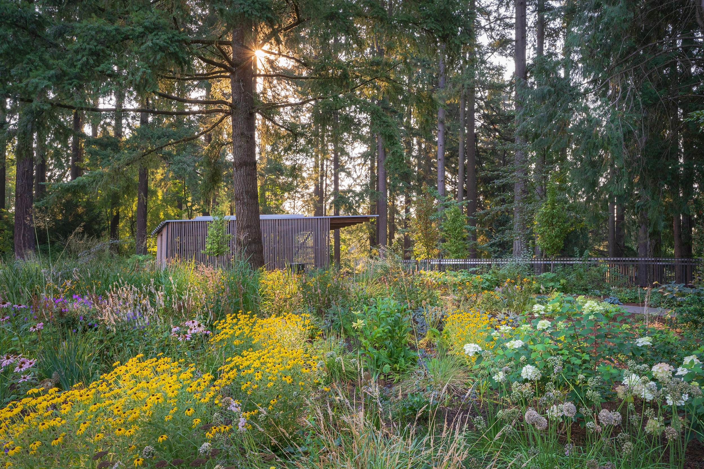
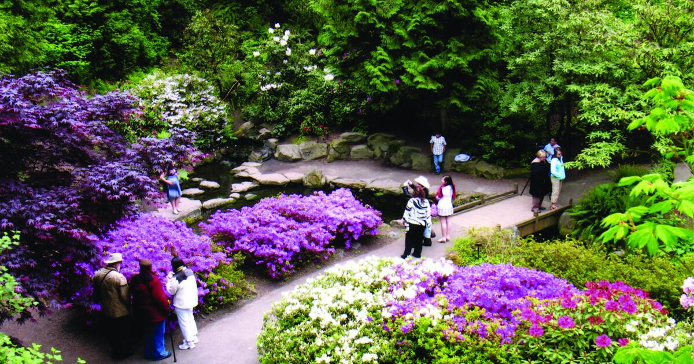
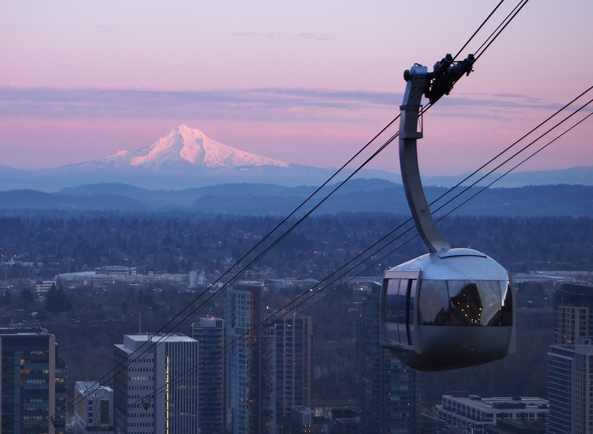
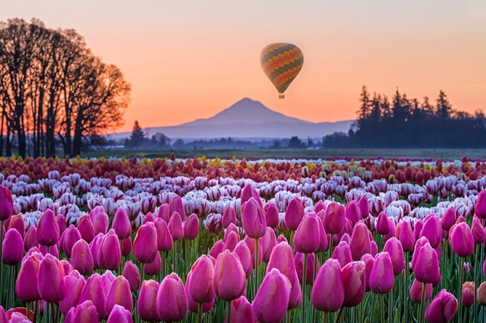

In The City
Stroll or Picnic in the Leach Botanical Garden

-
Best time to go: Year-round, but spring is especially nice when most flowers are in bloom.
-
Tip: Stop by the Gift Shop for local Portland goods.
Crystal Spring Rhododendron Garden

-
Best time to go: Late April-Early May for peak bloom.
-
Tip: Pair with a stroll around Reed College Campus or stop by downtown Woodstock for some food and drinks.
Kayak Smith & Bybee Wetlands

-
Rent from Cascade Paddle Rentals
-
Best time to go: Spring or Early Summer because these are wetlands and they’re dried up by Fall!
-
Tip: This is a great after-work activity for fewer people.
Portland Aerial Tram

-
Best time to go: Year-round, on a clear day for views of Mount Hood!
-
Tip: Park on the east side and walk across the Tilikum Pedestrian Bridge. Get food while you’re out!
Further Out
Wooden Shoe Tulip Farm

-
Best time to go: Late March-April
-
Tip: If you’re up for it, go for sunrise to avoid the crowds. Otherwise, the afternoon is nice and you can buy drinks and snacks.